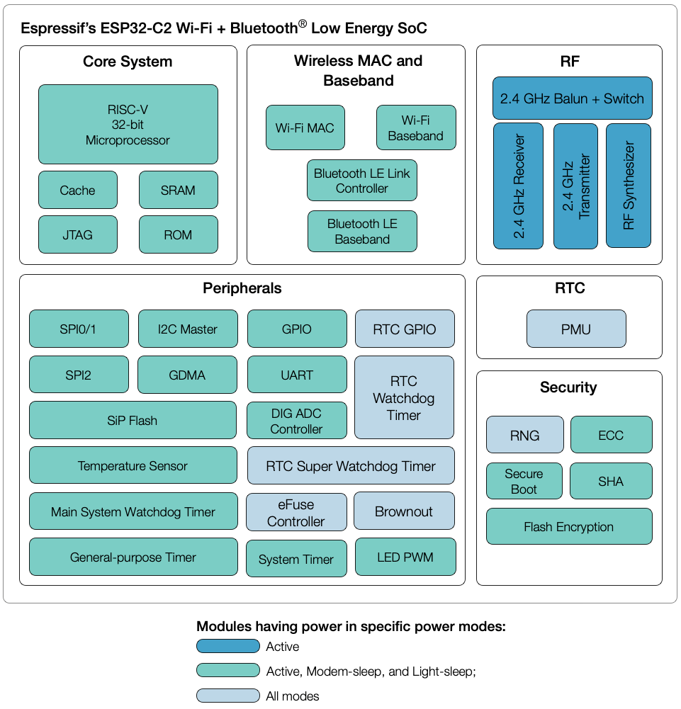

ESP32C2¶
Xin简介¶
规格参数¶
ESP32-C2 芯片比 ESP8266 面积更小、性能更强。
它搭载 RISC-V 32 位单核处理器，内置 272 KB SRAM (16 KB 专用于 cache) 和 576 KB ROM，支持 2.4 GHz Wi-Fi 和 Bluetooth 5 (LE)。
ESP32-C2 针对高容量、低数据速率的简单物联网应用设计，能够为插座、照明、传感器和简单的家电设备添加稳定的无线连接功能，为用户提供极具性价比的开发平台。
基本参数¶
发布时间：2021年12月
参考价格：
制程工艺：
供货周期：
处理性能：305.42 CoreMark
封装规格：QFN40 (5x5mm)
运行环境：-40°C to 105°C
RAM容量：272 KB
ROM容量：576 KB
Flash容量：1/2/4 MB
特征参数¶
120 MHz RISC-V (2.55 CoreMark/MHz)
Wi-Fi IEEE 802.11b/g/n
BLE 5.0
14 x GPIO
1024 位 OTP，可用的为 256 位
模拟性能¶
5ch 12-bit ADC1, 100 ksps
1ch 12-bit ADC2
芯片架构¶
Link Budget : 118dBm
电源参数¶
供电电压：2.3 to 3.6 V
功耗范围：
安全特性¶
Note
硬件安全单元十分利于物联网产品设计，特别是对加密算法的支持，在嵌入式领域配置如此多的安全外设，也是十分强大的
ECC 模块¶
SHA 模块¶
Xin选择¶
品牌对比¶
Characteristics |
UART/SPI/SDIO |
|||||
|---|---|---|---|---|---|---|
300 CoreMark |
272KB/576KB |
QFN40 |
||||
407 CoreMark |
512KB/384KB |
1T1R/v5.0 |
2/3/No |
|||
352KB/288KB |
3/2/1 |
|||||
288KB/1MB |
5/2/1 |
|||||
288KB/1MB |
1T1R |
6/2/1 |
QFN56 |
|||
276KB/128KB |
Characteristics |
UART/SPI/SDIO |
|||||
|---|---|---|---|---|---|---|
272KB/576KB |
QFN40 |
|||||
512KB/384KB |
QFN32 |
|||||
512KB/384KB |
QFN28 |
|||||
18KB/512KB |
QFN28 |
型号对比¶
WiFi |
BLE |
UART/SPI/IO |
|||||
|---|---|---|---|---|---|---|---|
272KB/576KB |
1024-QAM |
v5.0 |
1/2/14 |
QFN40 |
|||
400KB/384KB |
256-QAM |
v5.0 |
1/3/22 |
版本对比¶